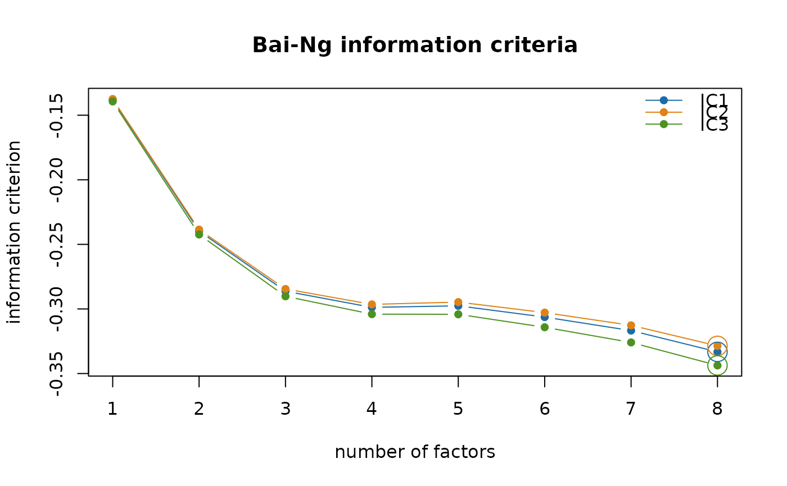
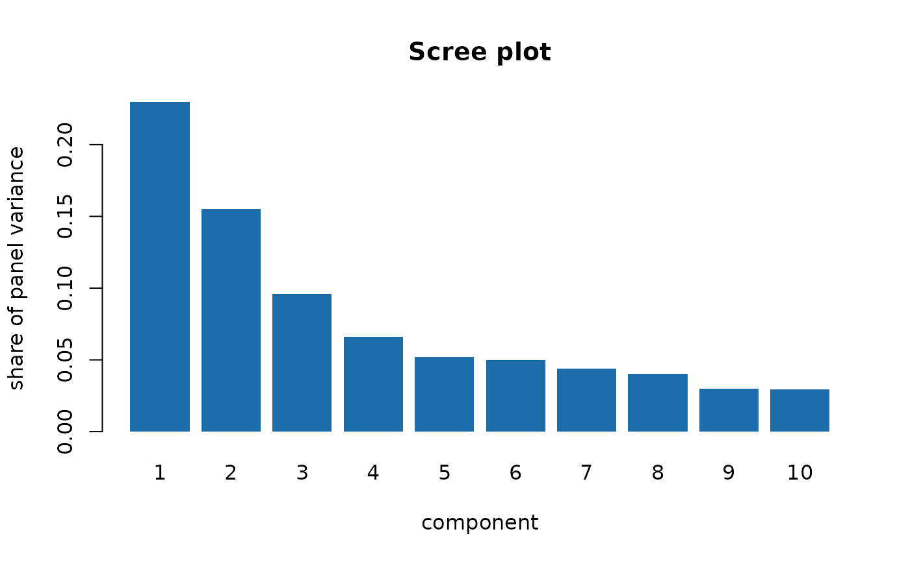

The generics a select_factors() result supports.
Arguments
- x
A
"select_factors"object.- ...
Further arguments passed to the underlying plotting functions.
- main
Plot title, or
NULLfor the default.- npcs
Integer, how many components to show in the scree plot.
- type
"barplot"or"lines", as forstats::screeplot().- value
"share"(default) plots the share of panel variance each component explains,"eigenvalue"the eigenvalues themselves.
Value
print() returns x invisibly. plot() and screeplot() are
called for their side effect and return the plotted values invisibly.
Details
print()The panel the criteria were computed on, the criteria themselves with each minimum marked, and the chosen factor count.
plot()The three criteria against the factor count, with their minima marked.
screeplot()The eigenvalues, or the share of panel variance each component explains.
Examples
data(data_ch_dataset_test)
sel <- suppressWarnings(
select_factors(flows = data_ch_dataset_test$flows,
stocks = data_ch_dataset_test$stocks,
max_q = 8, na_action = "interpolate"))
print(sel)
#> Bai-Ng factor-count selection
#>
#> Panel: 27 series at frequency 48, 1742 periods
#> 19 lower-frequency series excluded: ch.fso.rtt.ind.r.noga0801.sa, ch.seco.gdp.real.gdp.ssa, ch.ozd.e.wa.index.re.d11, ch.ozd.i.wa.index.re.d11, ...
#> missing values: interpolate
#>
#> q IC1 IC2 IC3 var % cum %
#> 1 -0.1380 -0.1375 -0.1393 23.0 23.0
#> 2 -0.2397 -0.2386 -0.2424 15.5 38.5
#> 3 -0.2863 -0.2845 -0.2902 9.6 48.1
#> 4 -0.2988 -0.2965 -0.3040 6.6 54.7
#> 5 -0.2976 -0.2947 -0.3041 5.2 59.9
#> 6 -0.3063 -0.3028 -0.3142 5.0 64.9
#> 7 -0.3167 -0.3127 -0.3259 4.4 69.3
#> 8 -0.3332 * -0.3286 * -0.3437 * 4.0 73.3
#>
#> Chosen q: IC1 = 8, IC2 = 8, IC3 = 8
#> IC1/IC2/IC3 are minimised at max_q = 8, so the minimum may lie beyond
#> the range evaluated. Raise `max_q`.
#> These are frequentist, principal-component criteria. They inform fcast_dfm()'s
#> `q`; they do not determine it.
plot(sel)

screeplot(sel)
